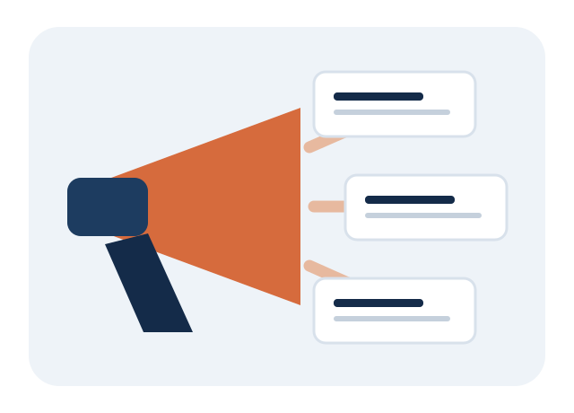

Cadastre sua empresa
Crie uma conta empresarial e informe os dados solicitados para identificar a organização responsável pelas oportunidades.
O ConectaTrabalho aproxima empresas e pessoas em busca de trabalho. Conheça o caminho disponível para divulgar uma oportunidade.

Crie uma conta empresarial e informe os dados solicitados para identificar a organização responsável pelas oportunidades.
Descreva cargo, localidade, modalidade, requisitos e condições de forma objetiva, completa e transparente.
Utilize o painel empresarial para publicar a vaga e acompanhar as candidaturas recebidas pela plataforma.
Atualmente, o ConectaTrabalho não oferece contratação de banners, compra de espaços publicitários, impulsionamento pago ou tabela comercial de mídia. A forma disponível de divulgação profissional é a publicação de vagas pela conta empresarial. Não envie pagamentos a terceiros que prometam destaque em nome da plataforma.